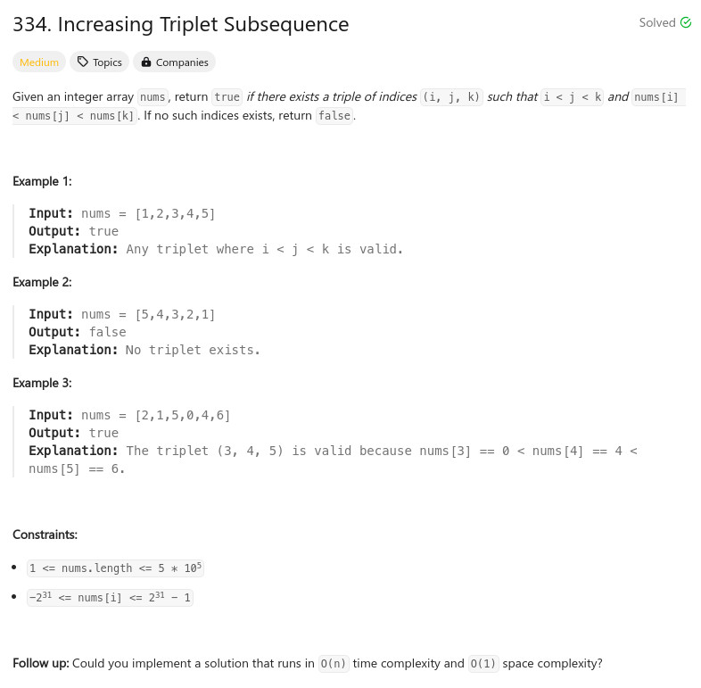

參考資訊：
https://www.cnblogs.com/grandyang/p/5194599.html
題目：

class Solution {
public:
bool increasingTriplet(vector<int>& nums) {
int m1 = INT_MAX;
int m2 = INT_MAX;
for (int i = 0; i < nums.size(); i++) {
if (m1 >= nums[i]) {
m1 = nums[i];
}
else if (m2 >= nums[i]) {
m2 = nums[i];
}
else {
return true;
}
}
return false;
}
};
解答2：
class Solution {
public:
bool increasingTriplet(vector<int>& nums) {
int len = nums.size();
vector<int> m1(len);
vector<int> m2(len);
m1[0] = nums[0];
for (int i = 0; i < (len - 1); i++) {
m1[i + 1] = min(m1[i], nums[i]);
}
m2[len - 1] = nums[len - 1];
for (int i = (len - 1); i > 0; i--) {
m2[i - 1] = max(m2[i], nums[i]);
}
for (int i = 0; i < len; i ++) {
if ((nums[i] > m1[i]) && (nums[i] < m2[i])) {
return true;
}
}
return false;
}
};